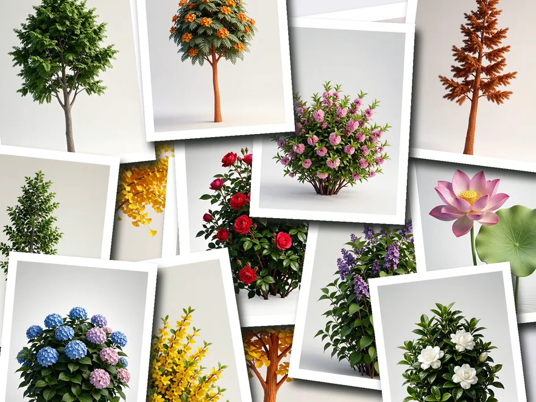

Hi there
I am Jon
漕运船工陈砚的父亲被贪官陷害冤死，只留下一对「忠」「勇」双铃。他蛰伏多年，夜探、越狱、上京，把冤屈一路告到金銮殿上——公道和性命，只能选一个。
横跨 24 个朝代、约 2700 年的中国疆域 3D 地图。拖动时间轴，疆域怎么长、怎么缩，哪块地换了主人，一眼看明白。内置 108 个历史事件，像一座可以玩的历史沙盘。
把 69 首必背古诗词放回它们诞生的地方。每个朝代只显示那个时代的诗，龙藏体书法、脉动金光、缓缓旋转的 3D 地图，把诗写进山水之间。搜索诗人的名字，就能看到他在哪儿写下这些诗。
你出题，让 AI 辩手来一场辩论赛。规则还原《奇葩说》：选边、立论、开杠、结辩被奇袭。30 位观众各有小传，听你辩完再投票。底层接 DeepSeek，每句话都是真思考。
让植物长满城市的每个角落，把钢筋水泥的城市种成一座可以逛的花园。
近地轨道空间站
玉米·黄金·美洲豹
赛博少年 Jon

城市中的植物
双铃铛坠人物设定集